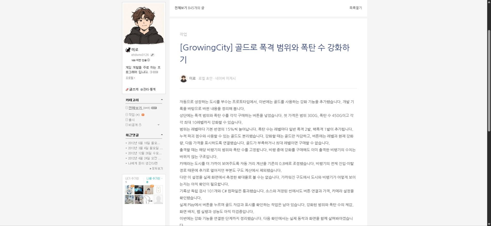
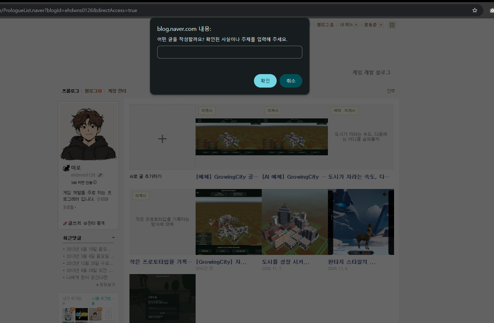

Tracefolio REPORTS & ISSUES
Tracefolio REPORTS & ISSUES미미로 블로그 매니저수정사항
확장 단일 작성 폼과 아카이브·게임 추천
완료연속 prompt를 단일 확장 폼으로 바꾸고 중앙 아카이브 추천·게임 검색 연결·출처 기반 AI 초안 생성을 추가했습니다.
작업 결과
네이버 +에서 전용 작성 폼이 열립니다. 중앙 아카이브 주소를 저장하고 실제 기록10개에서 선택해 AI 초안을 생성할 수 있습니다. 실제 설치 앱에서 GrowingCity 기록 기반 원고를 만들고 네이버 읽기 화면의 본문·태그·출처를 확인했습니다.

변경 내용
적용 내용
- 연속 prompt를 제거하고 Chrome 확장 compose.html에 주소·게임 검색어·추천 선택·추가 요청·생성 진행·초안 읽기를 한 화면으로 배치했습니다. 폐기한 웹 관리자는 복원하지 않았습니다.
- GitHub Pages 아카이브 홈과 공개 보고서 목록을 읽어 실제 출처·요약을 추천합니다. 주소 저장 후 재진입 시 자동 추천합니다. 외부·인증 포함·로컬 주소를 거부합니다.
- 게임 검색은 네이버 블로그 검색 API의 실제 제목·요약·출처를 사용합니다. 키는 사용자 데이터에만 저장하고 응답·설치 파일에 노출하지 않습니다. 전문·직접 경험으로 바꾸어 주장하지 않습니다.
- 선택한 아카이브 본문·이미지 목록을 기존 AI 작성기에 전달하고 결과의 출처 링크를 보존합니다.
- 0.6.0 설치본으로 갱신했고 기존 원고를 보존했습니다. 새 검증 원고가 추가되어 로컬 초안은5개입니다.

검증
- 전체 회귀26/26 통과(실제 HTTP 검사 포함).
- 실제 아카이브 홈페이지에서 추천10개. 설치 앱에서 추천 선택→실제 자료 읽기→AI 원고 저장→네이버 미게시 읽기 화면 확인. 선택 보고서에 대응하는 출처 보존. 해당 생성 원고는 이미지가 없는 텍스트 원고입니다.
- 단일 폼의 설정·추천 렌더·선택·생성·폴링·읽기 연결은 분리된 소스 DOM 테스트로 통과했습니다. 이는 실제 Chrome 내부 화면 자동 검증과 구분합니다.
- 사용자는 새 폼의 추천·초안 생성 완료를 확인했습니다. 별도로 직접 API 연결과 실제 생성 결과를 검증했습니다.
- 검색 API 인증·오류·비밀키 비노출·마크업 제거는 모의 응답 검사. 실제 검색 호출은 키 미등록으로 미실행.
- 설치44파일·스테이징 런타임37파일 SHA-256 일치, Git Chunk 복원 EXE 동일.
- 실제 아카이브 추천 · 실제 생성 · 소스 DOM 검사 · 설치본 검사
- 소스 커밋 f730a0e. 설치 SHA-256: 5B729F42CBC8518278CD49D13BF4DC80DDDFCA4CD9945AF3CD29AE1A3295B106.
남은 사항
게임 검색은 실제 네이버 API 키 연결 후 사용할 수 있으며 이번에는 실검색을 실행하지 않았습니다. 현재 아카이브 지원 주소는 GitHub Pages의 Tracefolio 홈 구조입니다. 확장 폼 내부 직접 화면 캡처·제어는 도구 보안 정책으로 미실행이며 이를 우회하지 않았습니다. 공개 네이버 발행은 기존 사용자 요청대로 보류했습니다.
교훈 검토: + 작성은 확장의 단일 폼에 배치하고 폐기한 관리 UI를 복원하지 않도록 프로젝트 AGENTS에 통합했습니다. 전역 지침은 기존 실제 진입 흐름 검증 규칙과 중복되어 변경하지 않았습니다.
작업 시간
- 제안 시간: 15~25분
- 실제로 완료된 시간: 시작2026-11-08 16:25:54 Asia/Seoul. 설치·실행 검증 종료 2026-11-08 16:42:12 Asia/Seoul. 공개 배포 확인 시간은 최종 결과에서 구분합니다.
- XERJ: 미사용 — XERJ 연결 도구 미제공. 현재 소스·rg·실제 HTTP/CLI·네이버 읽기 화면·분리 DOM 검사 사용.